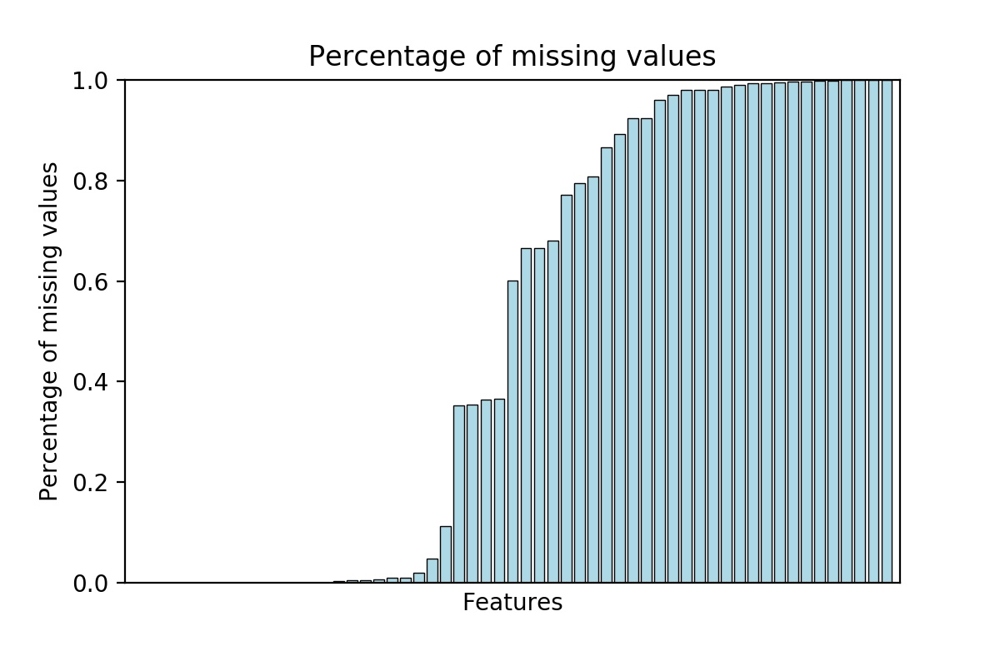
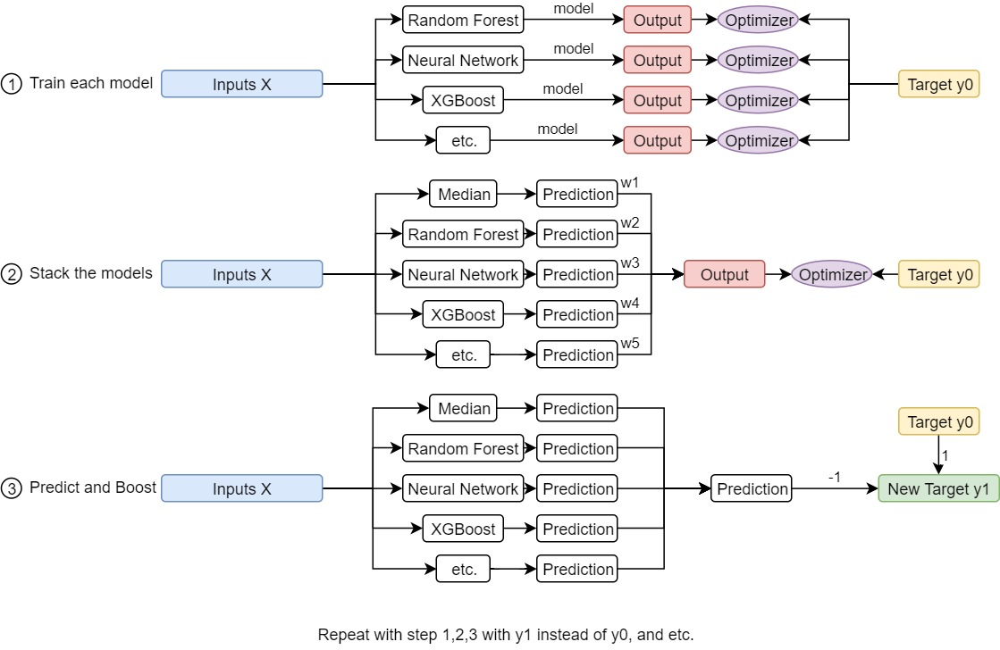
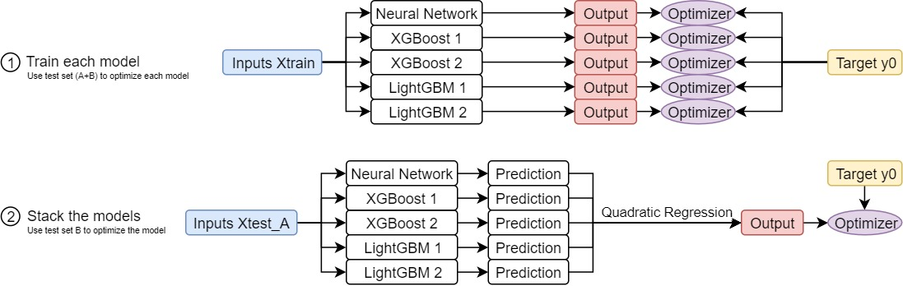

Zillow is a well-known online real estate company that includes predicting home values (Zestimate®). They posted a challenge, Zillow Prize, Zillow's Home Value Prediction (Zestimate) on Kaggle and hope to challenge the data science community to push the accuracy of Zestimate even further.
The community is hoped to predict the error of Zestimate with respect to the sale price of a property. To be precise, to predict the "logerror" defined as \(\log(Zestimate) - \log(SalePrice)\). We are expected to give the logerror at six time points - October, November and Decemeber in 2016 and 2017.
Our evaluation metric would be the mean absolute error of our prediction of the logerror and the true value of the logerror.
The data consists of a list of parcels or properties with their features. There are 58 features in total. Of course there are categorical data and numerical data. There are also a lot of missing values in the data. Some features are basically missing from almost all of the data. The chart below outlined the percentage of missing values in each feature.

There are also some data that includes different kinds of codes that we may be able to extract different part of the code and split up the data. For example, the code A120 and A230 both start with A, thus they may share some similarities.
We first tried to figure out which of the data are useful and which are duplicated from some other features. We did this by calculating the correlation matrix. We found that some features are perfectly correlated and thus we dropped some of the features. We also found that some features are not very useful as they are categorical, but the number of examples in each category are few, with a lot of missing values, and their correlation of the logerror does not stand out.
There are also several features, both numerical and categorical that indicates the geographical location of the parcel. We picked a few out of these feature and used as the main geographical features.
There are also a few features that contain a lot of missing values or they just have a unique category. As we know what the feature is actually describing, the missing values are more likely a result of the fact that the parcel did not include that feature in the data. We checked that their correlation with the logerror is negligible, thus we are dropping the feature.
There are some categorical features that contain so many categories that performing one-hot on them would be a pain. Originally we performed one-hot on the categories with numbers greater than a certain threshold. We changed the model to either dropping the feature entirely, or to perform one-hot on all of its categories. Note that we performed one-hot using the training data only. Thus for any new categories that are not present in the training data, we did not use one-hot to represent them. We set handle_unknown='ignore' to sklearn.preprocessing.OneHotEncoder.
We also create several new features in addition to the old features. Based on the description of the features, sometimes one may wonder the product or the quotient of the features will make a difference. Thus we created several new features when we suspect it may be helpful to include those.
For the missing values of a general features, we apply fillna with median to numerical data, and with 0 to categorical data, before performing one-hot. Note that we made sure that 0 was never a category in the categorical data.
The training data includes a feature called "transactiondate". That means that as they had the information about when the parcel had a transaction. We tried to not include it as the feature at first, but then we did include it at last.
The test data consists of about 3 millions of records. Thus memory was sometimes a problem to handle these preprocessings. One main difficulty was that we had to limit the number of features because performing one-hot on categorical features would easily cause a MemoryError.
At the end, we included 34 features in the training set and 114 features after one-hot. We kept both as we were using different models that may or may not need one-hot encoding.
As we observe that the 1% to 99% - percentile of the logerror lies between -0.5 and 0.5 (maybe less), we dropped out the outliers for the logerror in our training model.
We tried many different models in training. As this was my very first machine learning projects, I spent quite some time in familiarizing myself with different frameworks.
As this is my first project in neural network application, I spend a fair amount of time learning the basics of tensorflow. I have been watching online videos to familiarize myself with the basics of machine learning, and all of them did the most basic way - write from the scratch - using no framework but just pandas and numpy. We will have to write the forward propagation, calculate the gradients and write the backward propagations.
The first machine learning framework I used was scikit-learn. It really simplifies a lot of code writing as we can just write 2-3 lines of code to perform something that we have to write a lot of codes. Although I had to go online and check how to use those objects and what the attributes are (for example, from what import train_test_split, etc.), it simplifies a lot of coding.
Scikit-learn was easy to learn. We just had to go to the documentation and look for examples. Most of the methods are very direct and it just consists of several objects that make our lives easier. We can spend one day or two to familiarize ourselves to scikit-learn. But tensorflow is a different story.
The idea of tensorflow is very complicated as first. There is tf.constant, tf.Variable, tf.placeholder, etc. Then there is tf.Session() and we had to call sess.run while feeding dict to the placeholders and if the session is close, the variables are done for. The main objects of tensorflow are tensors, which were very mysterious object for someone who tried to learn them for the first time.
I came across this website that explains how to write a simple chunk of tensorflow and how to use it in machine learning. It helps with the basics.
In the learning process, I made seveeral mistakes. For example, I thought that calling tf.train.GradientDescentOptimizer(0.01).minimize(loss) would automatically continue with the gradient descent process, instead of just carried 1 step of gradient descent. I also made some common mistakes that mixed up [None, 1] tensors and [None] tensors (I guess this also occurs in np.array), but the code was running without error because of some broadcasting properties. (I really forgot what my errorneous code was.) Also, at the time, I was also looking at some other people's code and they used tflearn. Unaware that it was a different package, I thought the function fully_connected was "unique". Now I know they have tf.nn.fully_coonnected, tf.contrib.layers.fully_connected and tflearn.layers.core.fully_connected. There are possibly more. Another common mistakes for me was to write "=" instead of ":" in the feed_dict dictionary. Yes I know it is a dictionary - but I always forgot.
There are something that I think it is very important when writing tensorflow code but I still have not tried it outat the time of writing this page. I think the use of names and scopes is very important and so is the tensorboard visualization. I hope to learn to do these in the near future.
As this was my first tensorflow project, I struggled to finally run it. Adding up the difficulty was the amount of data that has to get passed to the feed_dict. There was always memory error when I ran the chunk of codes.
Thus the first few neural network I ran was very simple. Either with just 1 hidden layer, or just a few. The results were not very satisfactory. After a while, I tried several architecture of neural networks but none of them works well, alone, or compare to some other methods. My final neural network architecture is [114,57,57,28,28,14,14,7,7,1]. All activation functions are tf.nn.elu, with the exception of the last layer, which was a linear activation.
In the beginning I was really worried that the training did not go well. A common phenomenon was that the training error is alwasy higher than the test error. It was very weird as I suspected there may be data leakage. I don't know the answer to this but this was before dropping out the outliers. Maybe in the test set we got lucky that none of the outliers were included. A second phenomenon was that the training error went down very quickly but it stayed there are fluctuate around a value. Changing the learning rate did not help mitigating this problem, while the test error correlates with the training data. This means the network was not large enough to even try to overfit all the data. I was happy that the above (final) architecture does work - the common "training error will usually go down" and the "test error will decrease until a point where the model overfitted and it increases again" phenomenon. That means I could do early stopping, manually (We fix the number of epochs to be 10 - to save time).
We used a StandardScaler to scale all features. We use a minibatch size of 128 and a learning rate of 0.001 with AdamOptimizer.
As it was the early stage of my machine learning experiences - and I struggled with memory issues, a more natural idea was to drop all of the categorical features and just used the numerical features for the neural network. However, I did not want to waste those categorical features. Thus what I did was to use random forest only on those categorical features.
My method was to first use random forest to predict the logerrors using only categorical features, then use the neural network to predict the residue of our random forest prediction. We used a test set to check if the results were better and it was positive, however small. We also tweaked some of the hyperparameters of the random forest regressor to see if the results are better. We also did try doing the neural network first, then the random forest. The results were similar.
Using random forest regressor just improved by a very small amount as we could see that the R2 score was about 0.01, which was very small compare to a dummy regressor.
In the midst of all of the above methods, we did try to include transactiondate as a feature. Since we had to submit our prediction for six timepoints, the transactiondate will be set to those timepoints. Thus we had to output 6 different models, each with length about 3 millions. Ultimately we decided against doing that because our score was lower when we separate to different timepoints using the above method.
However, as we knew more about machines and memories and in particular, Google Cloud Platform, we did not have this problem anymore and we could include transaction date as a feature.
A new idea built on the above random forest (RF) and neural network (NN) was to repeat the process many time. This means we first train an RF model, predict it then train an NN model with its residue and perdict it. Then do the RF model again, then NN again, etc. We used this method once, but it did not work at all. Apparently it overfitted the data really easily and our final prediction was way worse.
Looking for ways to improve our scores, we got onto the Kaggle Kernels and see if there were any enlighening posts. The top posts/kernels by the time was about XGBoost and LightGBM. At that time I did not know either of the methods, but the code was given and it was in the style of scikitlearn - meaning we can just fit the data and get a model. The only problem was that there were a lot of hyperparameters.
We tried to just copy their code with our inputs using XGBoost and LightGBM. It did not work well. The result was about the same with our previous tries.
Perhaps the biggest breakthrough was to use ensemble training. Again my friend Geoff suggested that he was exploring different models in scikit-learn and see if anything good would come out. At the final stage he proposed a method, as follows.
He chose 5 fixed methods for the training data, one being a dummy one predicting the median, while the others are random forest, XGBoost, neural network, etc. After he trained the model for a while, he stacked the model by performing a linear regression on each predictions by each model. Then he repeated the same method again and again using boosting techniques - by predicting the residual error of the final prediction using the linear regression. His model block can be described by the graph below.

After tweaking some hyperparameters, he was able to break through to get a much better place on the kaggle leaderboard.
At the time we was working on a different project as their deadline was approaching. After the deadline, we returned to Zillow and tried something that was similar to Geoff's method. We merely just picked several models, neural network, XGBoost, LightGBM and average the results. To our surprise, it already did much better than any of my previous methods.
This suggested that ensmebling did help to get better output. (We will be talking about this below.) We tried to do boosting based on Geoff's method and found that even doing one boosting round would cause serious overfitting. Thus at the end we did not do any boosting at all.
I tried to do some stupid thing to increase my score - for example, tweaking the weights of the models manually so that it gives a better score. Previuosly the weights were uniform (i.e. one-third on each model). I tweaked it to be something like (3,4,4) etc and it improved by some degrees. This makes me wonder if we could just tweak the weights using our test set instead of the training set.
Then, we didn't know how this method arose, but what we did was to split the test set in half, and perform a linear regression on the first test set, using the second test set observed for overfitting. At the end we performed quadratic regression on the first test set, with early stopping and initialization on the first degree terms to be uniform, but zero initialization for the second degree terms. We tested our result using the resulting test sets and it worked quite well
Our end model used 1 nerual network, 2 XGBoost models with different hyperparameters, and 2 LightGBM models with different hyperparameters.

The main difficult of this challenge is that the Zestimate was already a very good estimator and it is very difficult to even push it further. The main challenge was that we tried to submit a dummy model by predicting the mean or the median of the logerrors. This turned out pretty well already. Thus this was our "baseline" model. We did a simple analysis on our test set and the following was a typical result.
| Model | Mean aboslute error |
|---|---|
| Dummy (Predicting all zeros) | 0.05002481 |
| Dummy (Predicting the median) | 0.04973658 |
| Neural Network | 0.04942442 |
| XGBoost 1 | 0.04914185 |
| XGBoost 2 | 0.04923409 |
| LightGBM 1 | 0.04909236 |
| LightGBM 2 | 0.04908637 |
| Final model after quadratic regression | 0.04898390 |
The error of the top spot on the leaderboard was about 0.0641 a few weeks before the deadline. Now the top on the leaderboard was 0.0632. Note the the error for the dummy regressor was 0.0651. Thus even the brightest team could get only this much better.
The table below consists of the results we got for different models. Note that the numbers (mean absolute error) were higher than our "test error" in the table above because we cropped out all the outliers.
| Submission | Mean Absolute Error |
|---|---|
| Median (dummy) | 0.0651361 |
| Neural Network [100,12,12,8,8,4,4,1] 50 Epochs | 0.0658774 |
| Neural Network 500 Epochs | 0.0681971 |
| Neural Network [100,100] + Random Forest | 0.0648959 |
| NN, RF, NN, RF | 0.0649142 |
| Dropping Outliers | 0.0647996 |
| Neural Network [100,100] + XGBoost | 0.0648624 |
| Random Forest only | 0.0650132 |
| XGBoost only | 0.0650161 |
| Neural Network + LightGBM | 0.0658616 |
| Ensemble (NN, XGBoost, LightGBM, RF) + dropping outliers | 0.0645492 |
| Ensemble (NN, XGBoost x2, LightGBM x2) + dropper outliers | 0.0645334 |
| As above, new data posted | 0.0644639 |
| Dropping more outliers (Final) | 0.0643804 |
Note that they released new data 2 weeks before the deadline (this was a part of their timeline). The above mean absolute error was from a public leaderboard. The private leaderboard will be released shortly.
import numpy as np
import pandas as pd
import matplotlib.pyplot as plt
import time
from sklearn.model_selection import train_test_split
from sklearn.preprocessing import StandardScaler
from sklearn.preprocessing import OneHotEncoder
from sklearn.preprocessing import PolynomialFeatures
from sklearn.utils import shuffle
from sklearn.linear_model import LinearRegression
import tensorflow as tf
import xgboost as xgb
import lightgbm as lgb
global path
path = ''
def readfiles():
'''Read the files train_2016_v2.csv and properties_2016.csv'''
print('Reading Files...')
tic=time.time()
train = pd.read_csv(path +'train_2016_v2.csv')
train['transactiondate']=train['transactiondate'].apply(lambda x : float(x[5:7]))
train['transactionyear']=0.0
df = pd.read_csv(path +'properties_2016.csv',low_memory=False)
print('Time elapsed: ',time.time() - tic)
return train, df
def readfiles2017():
'''Read the files train_2017.csv and properties_2017.csv'''
print('Reading Files...')
tic=time.time()
train = pd.read_csv(path +'train_2017.csv')
train['transactiondate']=train['transactiondate'].apply(lambda x : float(x[5:7]))
train['transactionyear']=1.0
df = pd.read_csv(path +'properties_2017.csv',low_memory=False)
print('Time elapsed: ',time.time() - tic)
return train, df
def preprocess(df):
'''preprocess the data'''
print('Preprocessing Data...')
params = {
'collist':[...], #featurenames hidden
'numlist':[...], #featurenames hidden
'temlist':[...], #featurenames hidden
'addlist':[...], #featurenames hidden
'enc':OneHotEncoder(handle_unknown='ignore')
}
#hidden
#perform preprocess on features including adding and dropping features and fillna().
return df.reset_index(), params
def mergeframes(train, df):
'''As the dataframe df does not contain the target logerror, we have to merge the two files to create the training data'''
print('Merging DataFrames...')
tic = time.time()
dftrain = df.merge(train,how = 'inner',left_on = 'parcelid', right_on = 'parcelid')
print('Done! Time elapsed:', time.time() - tic)
return dftrain
def cropframes(df, hi=0.5, lo=-0.5):
'''dropping the outliers'''
b=df[df['logerror']<hi]
return b[b['logerror']>lo]
def onehot(df, params):
'''Fitting the OneHotEncoder and transforming to the data'''
print('Fitting One Hot Encoding...')
tic = time.time()
enc = params['enc']
collist = params['collist']
numlist = params['numlist']
try:
remaining=[col for col in list(df.columns) if col not in ['parcelid']+numlist+collist]
except:
print('Input Dataframe Columns Error')
return None
df_onehot=pd.DataFrame(enc.fit_transform(df[collist].astype(int)).toarray(), index = df.index)
df_onehot=pd.concat([df[['parcelid']], df[numlist], df_onehot, df[remaining]], axis=1)
print('Done! Time elapsed:', time.time() - tic)
return df_onehot
def onehottransform(df,params):
'''One-Hot Transforming the data'''
print('Transforming One Hot Encoding...')
tic = time.time()
enc = params['enc']
collist = params['collist']
numlist = params['numlist']
remaining=[col for col in list(df.columns) if col not in ['parcelid']+numlist+collist]
df_onehot=pd.DataFrame(enc.transform(df[collist].astype(int)).toarray(), index = df.index)
df_onehot=pd.concat([df[['parcelid']], df[numlist], df_onehot, df[remaining]], axis=1)
print('Done! Time elapsed:', time.time() - tic)
return df_onehot
def traintestsplit(df, params, percent=0.98,random_state=0):
'''Performing One Hot and train test split'''
enc = params['enc']
collist = params['collist']
numlist = params['numlist']
X = df[numlist+collist+['transactiondate','transactionyear']]
Xonehot = onehot(df, params).drop(['parcelid','logerror'], axis=1)
y = df['logerror']
X_train, X_test, y_train, y_test = train_test_split(X,y, train_size=percent, test_size=1-percent, random_state=random_state)
X_onehot_train, X_onehot_test, _, _ = train_test_split(Xonehot,y, train_size=percent, test_size=1-percent, random_state=random_state)
return X_train, X_test, X_onehot_train, X_onehot_test, y_train, y_test
def neuralnetworkmodel(x):
'''The model for neural network. x: placeholder, output a tensor'''
numcol = int(x.get_shape()[1])
init = tf.contrib.layers.xavier_initializer()
activation = tf.nn.elu
net = tf.contrib.layers.fully_connected(x,numcol,activation_fn=activation, weights_initializer=init)
net = tf.contrib.layers.fully_connected(net,numcol//2,activation_fn=activation, weights_initializer=init)
net = tf.contrib.layers.fully_connected(net,numcol//2,activation_fn=activation, weights_initializer=init)
net = tf.contrib.layers.fully_connected(net,numcol//4,activation_fn=activation, weights_initializer=init)
net = tf.contrib.layers.fully_connected(net,numcol//4,activation_fn=activation, weights_initializer=init)
net = tf.contrib.layers.fully_connected(net,numcol//8,activation_fn=activation, weights_initializer=init)
net = tf.contrib.layers.fully_connected(net,numcol//8,activation_fn=activation, weights_initializer=init)
net = tf.contrib.layers.fully_connected(net,numcol//16,activation_fn=activation, weights_initializer=init)
net = tf.contrib.layers.fully_connected(net,numcol//16,activation_fn=activation, weights_initializer=init)
return tf.contrib.layers.fully_connected(net,1,activation_fn=None, weights_initializer=init)
def neuralnetwork(X_train,X_test, y_train, y_test, epochs=20,learning_rate=0.001, batch_size=128,save=''):
'''Training the neural network'''
print('Training neural network...')
tic=time.time()
numcol = X_train.shape[1]
tf.reset_default_graph()
x = tf.placeholder('float',shape=[None,numcol])
pred=neuralnetworkmodel(x)
output = tf.placeholder('float',shape=None)
error = tf.losses.absolute_difference(labels=tf.expand_dims(output,1), predictions=pred)
train_step = tf.train.AdamOptimizer(learning_rate = learning_rate).minimize(error)
saver = tf.train.Saver()
numberofdata = len(X_train)
numberoftestdata = len(X_test)
with tf.Session() as session:
session.run(tf.global_variables_initializer())
for i in range(epochs):
#Train the weights and record the training error
trainerror=[]
for j in range(numberofdata//batch_size):
er, _= session.run([error,train_step],feed_dict={x:X_train[j*batch_size:(j+1)*batch_size], output:y_train[j*batch_size:(j+1)*batch_size]})
trainerror.append(er)
#record the test error
testerror = []
for j in range(numberoftestdata//batch_size):
testerror.append( session.run(error, feed_dict={x:X_test[j*batch_size:(j+1)*batch_size], output:y_test[j*batch_size:(j+1)*batch_size]}))
#print('Epoch {:4}: Train error: {:12.8f} Test error: {:12.8f}'.format(i+1, np.mean(trainerror), np.mean(testerror)))
saver.save(session,'weights_nn'+save)
print('Done! Time Elapsed: ', time.time() - tic)
return 'weights_nn'+save
def get_neuralnetwork_result(X, weightname):
'''Make predictions using our model. Input weightname is the name of the saved weights'''
numcol = X.shape[1]
tf.reset_default_graph()
x = tf.placeholder('float',shape=[None,numcol])
pred =neuralnetworkmodel(x)
saver = tf.train.Saver()
numberofdata=len(X)
batch_size=10000
with tf.Session() as session:
session.run(tf.global_variables_initializer())
saver.restore(session,weightname)
predlist = np.array([])
j=0
while j<numberofdata:
output = session.run(pred,feed_dict={x:X[j:j+batch_size]})
predlist=np.append(predlist,output.reshape(-1))
j=j+batch_size
return predlist
def xgBoost(X_train, X_test, y_train, y_test, xgb_params, numround):
print('Performing XGBoost...')
tic = time.time()
dtrain = xgb.DMatrix(X_train, y_train)
dtest = xgb.DMatrix(X_test)
model = xgb.train(dict(xgb_params, silent=1), dtrain, num_boost_round=numround)
xgb_pred_train = model.predict(dtrain)
xgb_pred_test = model.predict(dtest)
print('Training error: {:8.4f} Test error: {:8.4f} Time elapsed: {:8.4f}'.format(
np.mean(np.abs(xgb_pred_train - y_train)),
np.mean(np.abs(xgb_pred_test - y_test)),
time.time() - tic))
return model
def lgBoost(X_train, X_test, y_train, y_test, lgbparams, numround):
tic=time.time()
print('Performing LightGBM...')
d_train = lgb.Dataset(X_train, label=y_train)
d_valid = lgb.Dataset(X_test, label=y_test)
model = lgb.train(lgbparams, d_train, numround)
pred_test = model.predict(X_test)
pred_train = model.predict(X_train)
print('Training error: {:8.4f} Test error: {:8.4f} Time elapsed: {:8.4f}'.format(
np.mean(np.abs(pred_train - y_train)),
np.mean(np.abs(pred_test - y_test)),
time.time() - tic))
return model
def ensemble_training(X_train, X_test, X_train_scaled, X_test_scaled, y_train, y_test,num=0):
'''Train 5 different models'''
weightname=neuralnetwork(X_train_scaled, X_test_scaled, y_train, y_test,epochs=10,save=str(num))
xgb_params1 = {
'eta': 0.020,
'max_depth': 6,
'subsample': 0.80,
'objective': 'reg:linear',
'eval_metric': 'mae',
'base_score': np.median(y_train),
'silent': 1
}
xgb_params2 = {
'eta': 0.037,
'max_depth': 5,
'subsample': 0.80,
'objective': 'reg:linear',
'eval_metric': 'mae',
'lambda': 0.8,
'alpha': 0.4,
'base_score': np.median(y_train),
'silent': 1
}
lgbparams1 = {
'max_bin' : 10,
'learning_rate' : 0.03,
'boosting_type' : 'gbdt',
'objective' : 'regression',
'metric' : 'l1',
'sub_feature': 0.7,
'bagging_fraction' : 0.85,
'bagging_freq' : 40,
'num_leaves' : 80,
'min_data' : 500,
'min_hessian' : 0.05,
'verbose' : 0
}
lgbparams2 = {
'max_bin' : 10,
'learning_rate' : 0.03,
'boosting_type' : 'gbdt',
'objective' : 'regression',
'metric' : 'l1',
'sub_feature': 0.5,
'bagging_fraction' : 0.85,
'bagging_freq' : 40,
'num_leaves' : 512,
'min_data' : 500,
'min_hessian' : 1,
'verbose' : 0
}
xgb1_model = xgBoost(X_train, X_test, y_train, y_test, xgb_params1, numround=325)
xgb2_model = xgBoost(X_train, X_test, y_train, y_test, xgb_params2, numround=125)
lgb1_model = lgBoost(X_train, X_test, y_train, y_test, lgbparams1, numround=100)
lgb2_model = lgBoost(X_train, X_test, y_train, y_test, lgbparams2, numround=175)
return weightname, xgb1_model, xgb2_model, lgb1_model, lgb2_model
def get_predictions(X, X_scaled, weightname, xgb1_model, xgb2_model, lgb1_model, lgb2_model, showtext=False):
'''Get predictions for the five different models. Return a DataFrame containing predictions'''
if showtext:
print('Beginning Prediction: Neural Network...')
tic=time.time()
neuralnetwork_pred = get_neuralnetwork_result(X_scaled, weightname)
toc = time.time()
if showtext:
print('Done. Time Elapsed: {:8.4f} Beginning Prediction: XGBoost...'.format(toc - tic))
tic = toc
xgb1_pred = xgb1_model.predict(xgb.DMatrix(X))
toc=time.time()
if showtext:
print('Done. Time Elapsed: {:8.4f} Beginning Prediction: XGBoost2...'.format(toc - tic))
tic = toc
xgb2_pred = xgb2_model.predict(xgb.DMatrix(X))
toc=time.time()
if showtext:
print('Done. Time Elapsed: {:8.4f} Beginning Prediction: LightGBM...'.format(toc - tic))
tic =toc
lgb1_pred = lgb1_model.predict(X)
toc=time.time()
if showtext:
print('Done. Time Elapsed: {:8.4f} Beginning Prediction: LightGBM2...'.format(toc - tic))
tic =toc
lgb2_pred = lgb2_model.predict(X)
toc=time.time()
if showtext:
print('Done. Time Elapsed: {:8.4f} '.format(toc - tic))
pred = pd.DataFrame()
pred['neuralnetwork'] = neuralnetwork_pred
pred['xgboost'] = xgb1_pred
pred['xgboost2'] = xgb2_pred
pred['lightgbm'] = lgb1_pred
pred['lightgbm2'] = lgb2_pred
return pred
def quadratic_regression(pred, y, pred_test, y_test, lamb=1e-2, alpha=1e-3):
'''Input a DataFrame of predictions and perform a quadratic regression'''
poly = PolynomialFeatures(2)
Xp=poly.fit_transform(np.array(pred))
Xp_test=poly.transform(np.array(pred_test))
#initialize the weights
n_features = Xp.shape[1]
n_deg_1_features = pred.shape[1]
weight_init = np.zeros([n_features,1])
weight_init[1:1+n_deg_1_features,0] = 1/n_deg_1_features
#Model for quadratic regression (lasso regression on quadratic features)
XP = tf.placeholder('float', shape=[None, n_features])
YOUT = tf.placeholder('float', shape = None)
W = tf.Variable(weight_init, dtype=tf.float32)
b = tf.Variable(tf.zeros([1,1]))
out = tf.add(tf.matmul(XP,W), b)
loss_reg = lamb*tf.reduce_mean(tf.multiply(W,W))
loss_data = tf.reduce_mean(tf.abs(out-tf.expand_dims(YOUT,1)))
loss = loss_data + loss_reg
grad_step = tf.train.GradientDescentOptimizer(alpha).minimize(loss)
dcount = 0
lasterror = 999999
with tf.Session() as sess:
sess.run(tf.global_variables_initializer())
for i in range(100000):
_, er = sess.run([grad_step, loss], feed_dict={XP: Xp, YOUT: y})
testerror=sess.run(loss_data, feed_dict={XP: Xp_test, YOUT: y_test})
if lasterror < testerror:
dcount = dcount + 1
else:
dcount = 0
lasterror = testerror
#early stopping
if dcount > 5:
break
Wout=np.squeeze(sess.run(W))
bout=np.squeeze(sess.run(b))
#As the first quadratic weight is a constant, the bias b is added to the first quadratic weight.
Wout[0]=Wout[0]+bout
return Wout
def get_predictions_quadratic(pred, W):
'''Getting prediction in the final quadratic model
poly = PolynomialFeatures(2)
Xp=poly.fit_transform(np.array(pred))
return np.dot(Xp,W)
def finalstage(X_train, X_test, X_train_scaled, X_test_scaled, y_train, y_test,num=0):
#Train the ensemble - five separate models
weightname, xgb1_model, xgb2_model, lgb1_model, lgb2_model = ensemble_training(X_train, X_test, X_train_scaled, X_test_scaled, y_train, y_test,num=num)
#Get the prediction using the train set
pred = get_predictions(X_train, X_train_scaled, weightname, xgb1_model, xgb2_model, lgb1_model, lgb2_model)
#Get the prediction using the test set
pred_test = get_predictions(X_test, X_test_scaled, weightname, xgb1_model, xgb2_model, lgb1_model, lgb2_model)
print('Performing ensemble training...')
tic=time.time()
#Train the quadratic regression using the test set A as the training set, and test set B as the test set
W=quadratic_regression(pred_test[:len(pred_test)//2], y_test[:len(y_test)//2], pred_test[len(pred_test)//2:], y_test[len(y_test)//2:], lamb=0, alpha = 3e-2)
print('Done! Time Elapsed:',time.time() - tic)
return weightname, xgb1_model, xgb2_model, lgb1_model, lgb2_model, W
train1, df1_ = readfiles()
train2, df2_ = readfiles2017()
df1 = df1_.copy()
df2 = df2_.copy()
df1, params1 = preprocess(df1)
df2, params2 = preprocess(df2)
dfall1=mergeframes(train1, df1)
dfall2=mergeframes(train2, df2)
dfall = pd.concat([dfall1, dfall2]).reset_index().drop('index', axis=1)
dfall = cropframes(dfall, lo=-0.35, hi=0.35)
X_train, X_test, X_onehot_train, X_onehot_test, y_train, y_test = traintestsplit(dfall, params2)
scaler = StandardScaler()
X_train_scaled = scaler.fit_transform(X_onehot_train)
X_test_scaled = scaler.transform(X_onehot_test)
weightname, xgb1_model, xgb2_model, lgb1_model, lgb2_model, W = finalstage(X_train, X_test, X_train_scaled, X_test_scaled, y_train, y_test)
for tdate in [10.0,11.0,12.0]:
for tyear in [0.0,1.0]:
df2['transactiondate']=tdate
df2['transactionyear']=tyear
tic = time.time()
Xfinal = onehottransform(df2,params2).drop('parcelid', axis=1)
Xf = scaler.transform(Xfinal)
pred = get_predictions(df2.drop('parcelid', axis=1), Xf, weightname, xgb1_model, xgb2_model, lgb1_model, lgb2_model, showtext=True)
final_prediction=get_predictions_quadratic(pred, W)
print('Time elapsed: ', time.time() - tic)